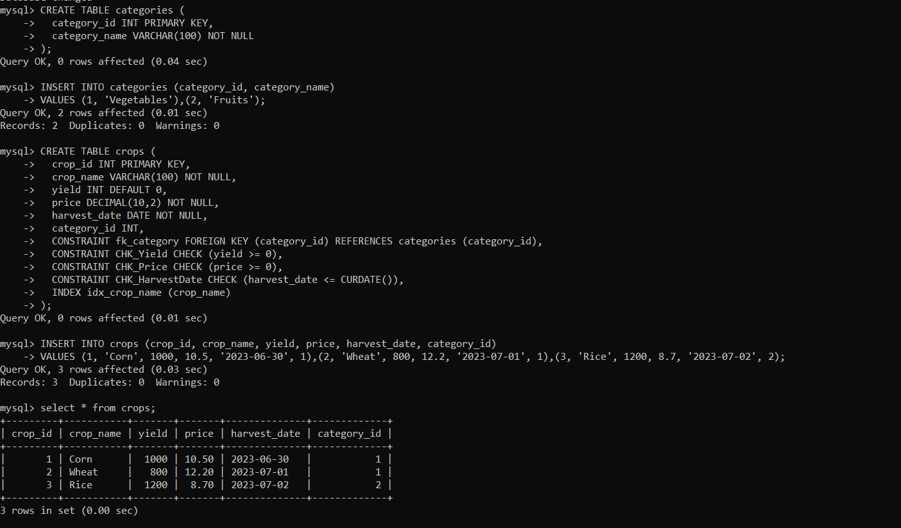

INTEGRITY CONSTRAINTS
Integrity Constraints Integrity constraints are rules applied to database tables to maintain data integrity.
They include primary key constraints to enforce unique and non-null values for primary keys, foreign key constraints
to ensure referential integrity between related tables, and check constraints to validate data based on specified conditions.
By enforcing these constraints, data inconsistencies and inaccuracies are prevented, ensuring the reliability and consistency
of the database.
NULL:Allows a column to have a null value, indicating the absence of a value
NOT NULL: Requires a column to have a value and disallows null values.
Primary Key: Ensures that a column or a set of columns uniquely identify each row in a table.
Foreign Key: Establishes a relationship between two tables by referencing the primary key of one table in another table.
Check: Defines a condition that values in a column must meet to be considered valid.
Default: Specifies a default value for a column when no explicit value is provided during the insertion of a new row.
